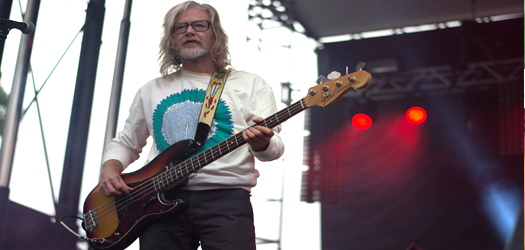
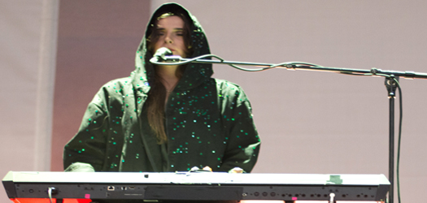
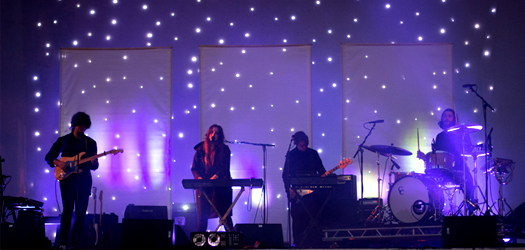

Pitchfork Friday
Friday evening’s kick off saw the likes of Moses Sumney, Mick Jenkins, last year’s breakout starlet Shamir, and an old favorite, Broken Social Scene. We found ourselves at the second half of Moses Sumney’s performance after being lured through the crowd by Sumney’s enticingly haunting angelic voice. Sumney is a folk singer with a bit of soul. He could hold notes for what felt like minutes and with his guitar and soft croon, he’s a bit reminiscent of Lianne La Havas in male form. He’s been on the music festival circuit this summer performing songs from his EP Mid-City Island, with his popular hit “Plastic.” His set was a entrancing to the audial senses, perhaps it was the loops, effects and musical swirls, combined with a voice of dreams.
Contrast that to the bellowing command of Chicago’s Mick Jenkins who followed. Jenkins’ set began a bit late causing the crowd to begin chanting “drink more water,” and that wasn’t just because it was hot outside. Jenkins has been touting the praises of hydration since his south side Chicago rap beginnings on his debut mixtape The Waters. Despite shortened time, he did not disappoint. Currently making the musical rounds to promote the release of his sophomore album THC. Jenkins’ focus is now on spreading love, which gave the crowd something new to chant about, along with bringing out his rap trio Hurt Everybody, who made an appearance at the end to perform “Social Experiment,” most widely known for the chorus reptition of "gang," a song about hanging out with your friend, a song that is so Chicago, that Fat Tiger and DMB should really consider using it to sell their gang hats.

Broken Social Scene hit Pitchfork like a blast from the past, bringing forth memories of late college nights. The supergroup joined forces again to serenade the Pitchfork crowd. Broken Social Scene just isn’t quite the same for me without an appearance from Feist or Emily Haines, but hearing “KC Accidental” was the sweetest bit of nostalgia. They definitely still got it after all of these years, and even thanked the crowd for sticking with them for so long.


The headlining performance from the Baltimore band, Beach House was highly anticipated after they played Pitchfork in Paris last year. Their music has a bit of an indie 80’s ethereal vibe to it, and French songstress Victoria Legrand has breathy vocals like a soft bubblegum pop whisper. Despite the fact that they are noted as an “it” band right now, there’s not much you can do to liven a crowd behind a keyboard so the performance was a bit static, but nonetheless, a good show for folks who appreciate that sort of thing. [ciera mckissick]
Read more: 1 | 2 | 3 |
Check out more Pitchfork photos here!
Check out our Pitchfork mixtape over at Soundcloud.
photo credits: ciera mckissick | ryan barayuga